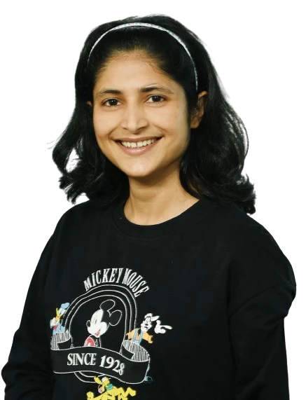

Atmospheric physicist
Dr. Nidhi Tripathi
Atmospheric physicist, passionate about climate change and the invisible chemistry of our air.

Atmospheric chemistry
Climate
Ph.D.
Atmospheric physicist, passionate about climate change and the invisible chemistry of our air.
